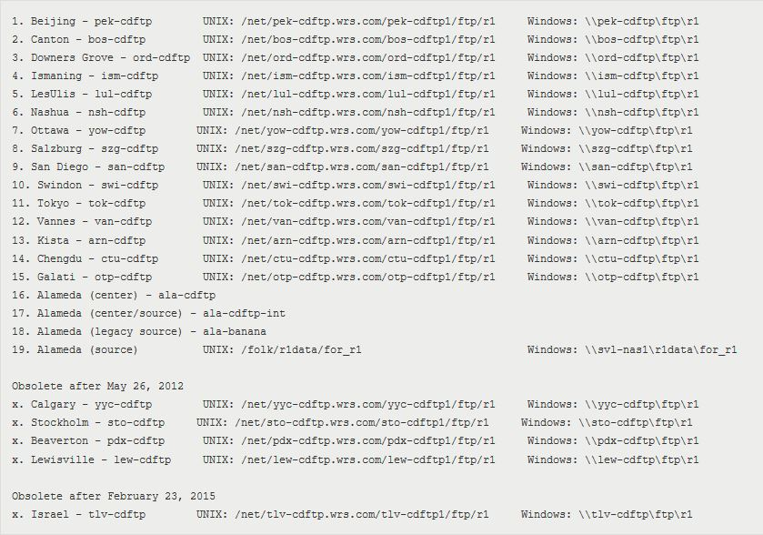
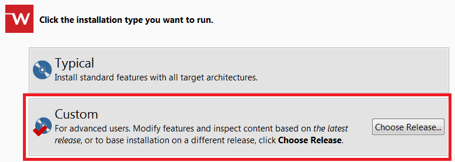
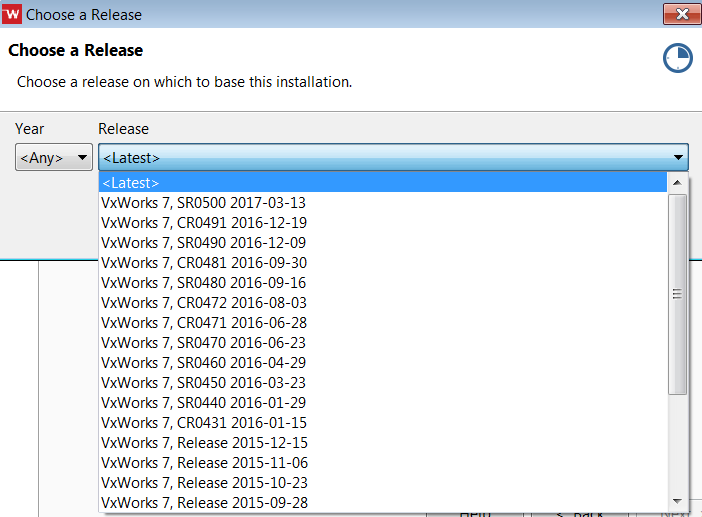

Accessing and Installing a VxWorks Spin¶
THIS PAGE IS CURRENTLY SERVING AS A PLACEHOLDER. IN PROGRESS for updates.
Purpose: During the course of development or testing, it may become necessary for a Developement or Test Engineer to install a VxWorks Spin. The term Spin refers to manufactured and packaged VxWorks media. Traditionally this would have been a DVD image, but today VxWorks is delivered electronically. The following provides useful information on Spins and accessing and installing them.
(Source:
Procedure¶
All VxWorks Spins are hosted on R1 sites. R1 sites can be access either through a Unix or Microsoft Windows network share. The sites are distributed geographically for efficiency and kept in sync. The list of R1 sites:

Accessing Officially Released Versions¶
The officially released version of a Wind River product can be accessed either through WindShare or via a local R1 site.
WindShare instructions can be found here: VxWorks Installation Instructions for Internal Users — Link content is outdated
R1 site cab accessed throught the following directory: <r1_site>released_media
This path contains “official” spins released to customers
Note that the latest VxWorks 7 installer will allow you to customize your installation to include previously released baselines (see images below)


Accessing a Version Still in Production¶
To access a version of the product still in production you must access your local R1 site under the following directory: <r1_site>vxworksvxworks-7.0
This path contains all Spins, including the latest integration builds, and special requests
When code changes are detected on the current integration branch (i.e. vx7-<SRxxxx>-features) a new integration Spin is created. This Spin will show up in this folder with the following naming convention: vx<timestamp>_vx7-integration
Installing Specific Profiles from R1¶
To access an official or production Spin on an R1 site, install specific profiles to fit particular requirements
To install a VxWorks 7 Spin you must execute the installer found in <spin_folder>bootstrap_installer[setup.exe|setup_linux]
To install just the core VxWorks 7 profile you must execute the installer found in <spin_folder>bootstrap_installer_core_platform[setup.exe|setup_linux]
To install a specific profile you must execute the appropriate installer in <spin_folder>installer_profiles<profile_name>[win32|linux32]VxWorks_7[setup.exe|setup_linux]
Change Log¶
Date |
Change Request ID |
Version |
Change By |
Description |
06/16/2020 |
N/A |
0.1 |
Shree Vidya Jayaraman |
Transferred content from Accessing and Installing VxWorks Spin Jive page |